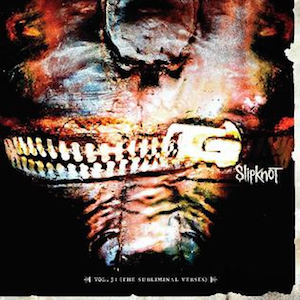

Slipknot is releasing the five original albums ever.

| Release | 29/06/1999 |
| Title | Slipknot |
| Sales | 2,000,000 |
| Release | 28/08/2001 |
| Title | Iowa |
| Sales | 1,000,000 |

| Release | 25/05/2004 |
| Title | Vol. 3: The Subliminal Verses |
| Sales | 1,000,000 |

| Release | 26/08/2008 |
| Title | All Hope Is Gone |
| Sales | 1,106,000 |

| Release | 21/10/2014 |
| Title | .5: The Gray Chapter |
| Sales | 323,000 |